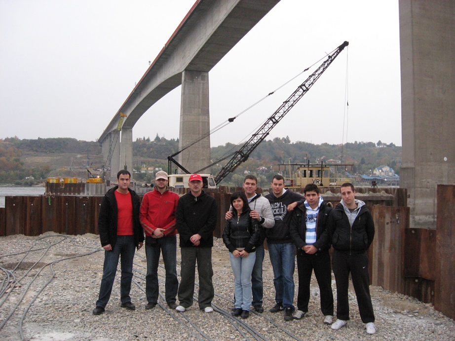
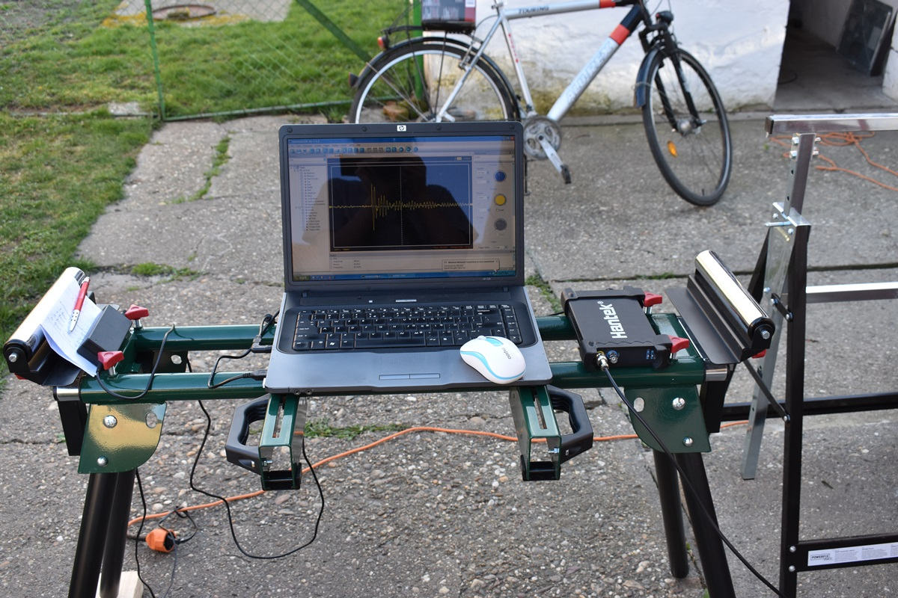
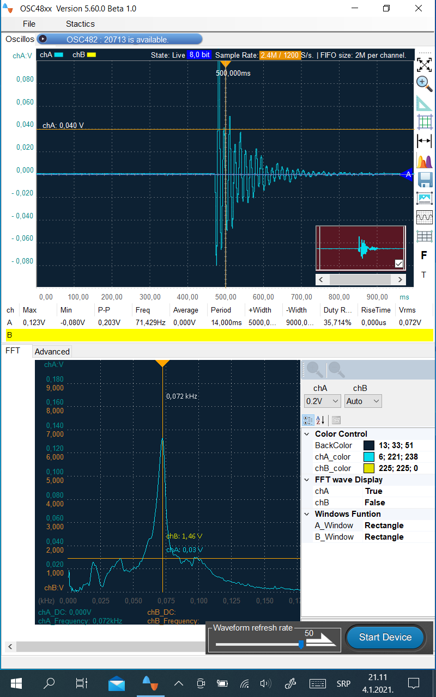

Грађевинарство - заједничке основе
Конструкције
Хидротехника и водно инжењерство околине
Саобраћајнице
Архитектонско инжењерство
- Статика конструкција 1
- Конструктивни системи или Конструктивни системи на www.wix.com

Стручна екскурзија (2009): Градилиште моста преко реке Дунав код Бешке.
| Google Earth |
-- позиција моста.
Formant: The Mathematical Problem with Music, and How to Solve It |31:44|

Основне академске студије
Напомена:
Прилози су у циљу едукације студената.

IMM-2019_D: Hantek 6022BЕ
ИММ: Тестирање решеткастог носача од дрвета при дејству динамичке побуде.
|Кикинда, 12.03.2020. године|
Резонатна метода утврђивања модула еластичности материјала.

ИММ: Осциловање тачке у средини рас-пона модела дрвене гредице.
VirtualBrain: